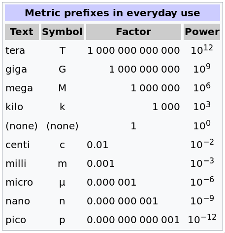
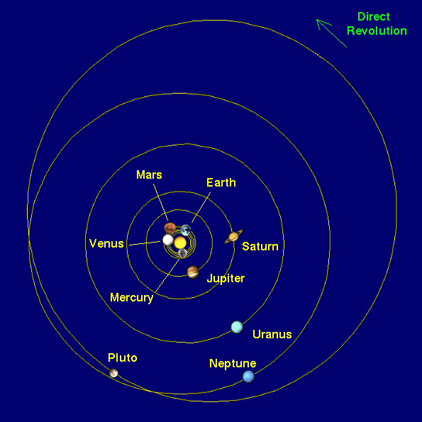

ASTR101 Ch 0-1
Ch 0 - Math Review (prealgebra)
Exponentiation and logarithms
Exponentiation (\(a^n\)) means multiplying a number by itself.
- Anything raised to the power of 0 is 1 (except 0).
- A number \(a\) raised to the \(n\)th power means it multiplies itself \(n\) times.
- For example, a1=a, a2=a*a, a3=a*a*a.
- Eg: What is 25?
- Eg: What is 32?
- Eg: Why do we say \(\sqrt{a}=a^{1/2}\)?
Logarithms
- Exponentiation asks, "what do I get when I multiply a number \(a\) by itself \(n\) times?"
- Logarithms ask, "how many times do I have to multiply a number \(a\) by itself to get \(b\)?"
- We denote the logarithm base \(a\) of \(b\) as loga(b).
- Example: log10(1000)=?
Mathematical manipulations
Order of Operations
- PEMDAS: parentheses, exponents, multiplication & division, addition and subtraction.
- Eg: What is 4*(2+3)4?
- Eg: What is 2+3*22/3?
FOIL - First, Outer, Inner, Last
- If you have a product of sums, e.g. (a+b)*(c+d), how do you evaluate it?
- Expand by multiplying the First terms in both parentheses, then the Outer, then Inner, then Last.
- (a+b)*(c+d)=a*c+a*d+b*c*b*d.
- Eg: What's (2+2)(3+5)? (First use FOIL, then use PEMDAS to check).
- Eg: What's (x+3)(x-2)?
- Eg: What's (a+2b)2?
Fractions
Multiplication and Division
\begin{align*}
\frac ab*\frac cd&=\frac{ac}{bd}\\\\
\frac ab \div\frac cd&=\frac ab * \frac dc=\frac{ad}{bc}
\end{align*}
Addition and Subtraction
\begin{align*}
\frac ac+\frac bc&=\frac{a+b}c\\\\
\frac ac-\frac bc&=\frac{a-b}c\\\\
\frac ab+\frac cd&=\frac{ad}{bd}+\frac{cb}{db}=\frac{ad+cb}{db}
\end{align*}
Percentages
Finding percentage
- Recall that equivalent fractions can be expressed multiple ways; e.g., 2/3 is the same as 4/6 or 20/30.
- A percentage is just a fraction out of 100. For example, 1/2 is the same as 50/100, so we say 1/2 is 50%. 1/4 is 25/100 so we say 1/4 of something is 25% of it.
- To find the percentage, solve the equation 2/3=x/100. What do we get?
Angles
Equivalent angles

- A red line crosses two parallel blue lines.
- First, concentrate on the lower blue line. Which angles are equal?
- Now, compare the bottom angles to the top angles. Which are equal?
Radians
- Radians are an alternative to degrees.
- There are 360° in a circle if we're talking about degrees.
- In radians, there are 2π radians in a circle.
Degree-Minute-Second (DMS)
- We can further divide degrees if we want to talk about very precise angles.
- We can divide degrees into 60 arcminutes, and each arcminute into 60 arcseconds.
Isolating Variables
- Suppose we have an equation (2+x)2+3=x2, and we have to solve for x.
- The end goal is to just have x on one side of the equation.
- Let's solve it!
Proportionality
- Suppose Yelle makes three times as much money as Xavier at her job.
- We can choose "y" to be how much Yelle makes and "x" to be how much Xavier makes. Then, y=3x.
- When we have something of the form y=[constant]*x, we say y is proportional to x, with the notation y∝x.
- Exercise: Suppose a∝b, and if b=5, a=2. What is a when b is 10?
Numbers in Science
Scientific Notation and e-notation
- We often deal with large (or small) numbers in science. For example, there are about 50,000,000,000,000,000,000,000 stars in the universe and about 125,000,000,000 galaxies.
- Suppose we want the average number of stars in a galaxy; we'd have to divide those two giant numbers.
- This is much easier if we express the numbers in scientific notation; there are 5×1022 stars in 1.25×1011 galaxies—cleaner, right?
- This also makes multiplication and division easier, for example we can find the average number of stars in a galaxy:
\begin{align*}
&\frac{5\times10^{22}\mbox{ stars}}{1.25\times10^{11}\mbox{ galaxies}}=\frac{5}{1.25}\frac{10^{22}}{10^{11}}\frac{\mbox{stars}}{\mbox{galaxy}}
\\&=4\times10^{22-11}\frac{\mbox{stars}}{\mbox{galaxy}}=4\times10^{11}\frac{\mbox{stars}}{\mbox{galaxy}}
\end{align*}
- On the other hand, we have to be careful when adding or subtracting two numbers that their exponents are the same!
\begin{align*}
3\times10^6+4\times10^8&=(3+4\times10^2)\times10^6
\\&=(3+400)\times10^6=403\times10^6
\\&=4.03\times10^8.
\end{align*}
SI Units
- To describe different scales, we use different prefixes; for example, we have the meter (m), centimeter (cm), kilometer (km), nanometer (nm), micrometer (μm), and so on..

Significant Figures
- As discussed previously, every scientific result is limited—for example, if we're measuring the length of a couch with a ruler, we could say it's 3 meters. If we're very careful, we can say it's 3.3 m (ie, 3 meters and 30 centimeters). However, it would be unreasonable to say with a ruler that the couch is 3.300891 meters (3 meters, 300 millimeters, and 891 micrometers), because (1) our ruler doesn't have that much precision, and (2) the couch itself isn't built to such precise specifications.
- The degree of accuracy of a number is represented in the number of its significant figures ("important digits").
- Finding the number of significant figures
Here are the rules for finding the number of significant figures:
- All non-zero numbers are significant.
- Zeroes are significant if they're:
- Surrounded by significant figures (e.g., 502).
- After the decimal point (e.g., 30.00).
- Zeroes are not significant if:
- They're on the right of a number without a decimal point (e.g., 20,000).
- Come before the number (e.g., 0025)
- Suppose we want the area of a field (length×width). You measure the length precisely to be 33.5 m, but your friend is sloppy and measure the width to be 19 m. The answer is 636.5 m2, but how many significant figures should it have?
- Simple, in multiplication and division, keep the least number of significant figures. In our example, your sloppy friend only had two significant figures, so we have to round 636.5 m2 (accurate to .1 m2) to 6400 m2 (note the lack of decimal point). This means our area is somewhere between 6350-6449 m2—if that's not a good enough estimate, you can send your friend back to get a better estimate.
- Suppose we have two couches and want to find their combined length. You measure your couch precisely, and get 3.5 m, While your sloppy friend measure 10 m. When we add them, how many significant figures should we have in the answr of 13.5 m?
- Your measurement is accurate to the tenths place (great job!), and your friend's to the tens place, so you have to keep the least accuracy, the tens place. The answer is 10 m!
- In addition and subtraction, you line up the numbers and keep the least precision. Note that this doesn't count significant figures; instead it counts the least precision (tens' place, ones' place, tenths' place, hundredths' place, etc.)
Ch 1 - Science and the Universe: A Brief Tour
The Nature of Astronomy
- Astronomy is the study of objects that lie beyond our planet Earth and the processes by which these objects interact with one another.
- Universe is changing
The Nature of Science
Observational Science
- Objective, evidence-based, reproducible.
- Scientific Method
- Observation: Observe something.
- Question: Ask a question about the observation.
- Hypothesis: Give a possible answer to the question.
- Experiment: Come up with and perform an experiment to find out whether the hypothesis is correct.
- Analysis: Analyze the data of the experiment.
- Conclusion: Formulate a conclusion from the data.
- Repeat!
Geocentric and Heliocentric Model


The Laws of Nature
- Scientific Laws or Scientific Theories? Limitations and Evolution of Science.
- Math: The language of science
Numbers in Astronomy
- Scientific Notation (Appendix C)
- SI Units (Appendix D)
- Unit Conversion
- Astronomical Units and Constants
- Speed of light
- Light-year: Measure of the DISTANCE that light travels in one year.
Consequences of Light Travel Time
Light has finite speed!
- Light-year: A natural historical measure!
- AU: Average Earth-Sun distance, approximately 1.5x108 km.
- A history-book of the universe!
A Tour of the Universe
Overview of our Solar System
Overview of Milky Way
- Can't see the rim! Interstellar dust in-plane—some wavelengths invisible to the gas!
The Universe on the Large Scale
Universe, Cosmos, Galaxy, System, etc.
- Capitalized, "Galaxy" refers to Milky Way, uncapitalized to any galaxy
- We are part of a Local Group of over 50 galaxies, which is part of the Virgo Supercluster, with diameter of 110 MLy.
- Solar System < Galaxy < galaxy cluster < supercluster < Universe
The Universe of the Very Small
- Vacuum: On Earth, 1019 atoms/cc, interstellar gas: 1 atom/cc, intergalactic space: 1 atom/m2.
- Cosmically Abundant Elements (Table 1.1) - pattern? Atomic Fusion.
- Discerning atoms with proton number, atomic isotopes, charged atoms.
- Atomic structure: proton, neutron, electron.
- Electron radius is ~105 times the nucleus radius.
- Earth-Sun distance is ~100 times the size of the Sun.
- Matter is mostly empty space!
Four forces
- Gravity, Electromagnetism, Strong and Weak Nuclear Forces.
A Conclusion and a Beginning
- The temporal universe: